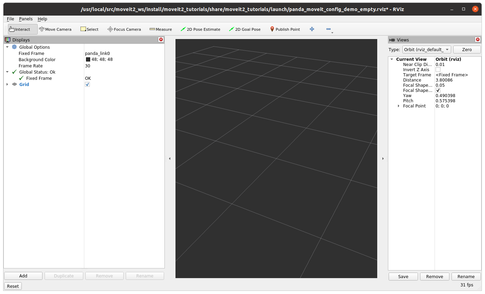
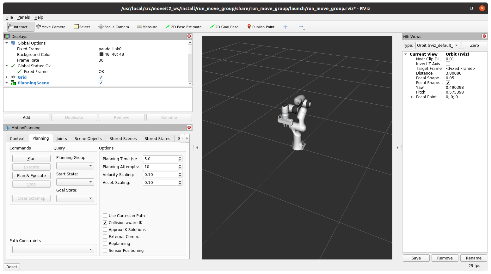

Moveit2 Image
The MoveIt2 Docker image uses the Space ROS docker image (openrobotics/spaceros:latest) as its base image, which you can build, following this tutorial. The MoveIt2 Dockerfile installs all of the prerequisite system dependencies to build MoveIt2 (and Moveit2 tutorials) and then pulls and builds the latest MoveIt2 and Moveit2 tutorials source code.
Cloning the repository
Move into your Space ROS workspace:
cd spaceros_ws
Clone the docker repository:
git clone https://github.com/space-ros/docker
Building the MoveIt2 Image
To build the docker image, run:
cd docker/moveit2
./build.sh
The build process will take about 30 minutes, depending on the host computer.
Running the MoveIt2 Docker Image in a Container
After building the image, you can see the newly-built image by running:
docker image list
The output will look something like this:
REPOSITORY TAG IMAGE ID CREATED SIZE
openrobotics/moveit2 latest 6edb2edc9643 10 hours ago 15.5GB
openrobotics/spaceros latest 629b13cf7b74 12 hours ago 7.8GB
nvidia/cudagl 11.4.1-devel-ubuntu20.04 336416dfcbba 1 week ago 5.35GB
The new image is named openrobotics/moveit2:latest.
There is a run.sh script provided for convenience that will run the spaceros image in a container.
./run.sh
Upon startup, the container automatically runs the entrypoint.sh script, which sources the MoveIt2 and Space ROS environment files. You’ll now be running inside the container and should see a prompt similar to this:
spaceros-user@8e73b41a4e16:~/moveit2#
Running MoveIt2 Tutorials
Run the following command to launch the MoveIt2 tutorials demo launch file:
ros2 launch moveit2_tutorials demo.launch.py rviz_tutorial:=true
You should see lots of console output and the rviz2 window appear:

You can now follow the MoveIt2 Tutorial documentation
Running the MoveIt2 Move Group C++ Interface Demo
To run the Move Group C++ Interface Demo, execute the following command:
ros2 launch moveit2_tutorials move_group.launch.py

Then, you can follow the Move Group C++ Interface Demo documentation
Running the Space ROS Space Robots Demos
Once you have tested that MoveIt2 works, you are ready to run some of the other Space ROS space robot demos